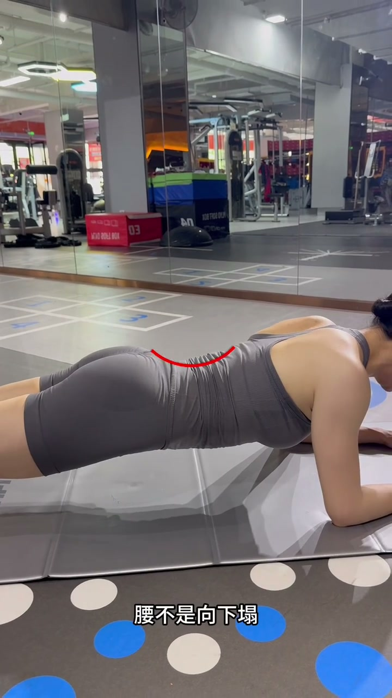
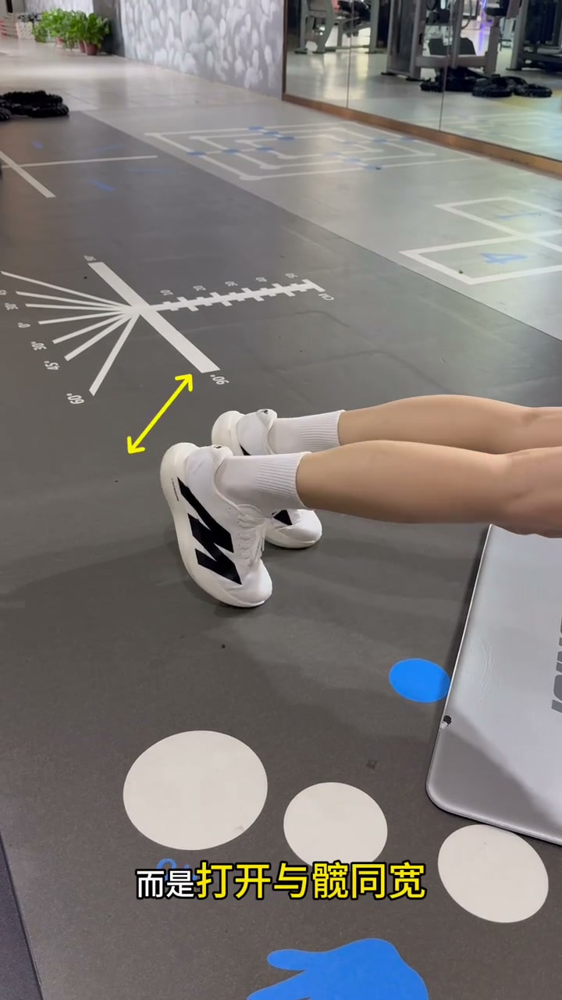

腰发力 vs 腹发力
00:00这是腰发力的平板支撑——塌腰、夹肩，练完腰酸。
00:01这是腹发力的平板支撑——腹收紧、微拱腰，练的是腹。
00:03正确做法看好了。

[00:01] 对比：腰发力的平板支撑
Comparison: plank powered by the lower back

[00:04] 对比：腹发力的平板支撑
Comparison: plank powered by the abs
手掌、肩胛骨、颈部细节
00:05手掌不是抱拳，而是掌心向下、与肩同宽。
00:08肩胛骨不是夹着，要向两侧撑开——打开背部，让力量贯通到腹。
00:11头不要后仰，要保持颈部中立。

[00:07] 手掌掌心向下与肩同宽，肩胛骨撑开
Palms down, shoulder-width apart, shoulder blades spread

[00:11] 颈部中立，头不后仰
Neck neutral, head not tilted back
腰腹、双脚细节
00:14腰不是向下塌，要腹收紧、略微向上拱——这是腹发力、不伤腰的关键。
00:17双脚不是并在一起，而是打开与髋同宽——增加支撑稳定性。
00:21掌握以上细节，做的平板支撑才能发力在腹上。

[00:15] 腹收紧，腰略微向上拱
Core pulled in, lower back arched slightly upward

[00:19] 双脚打开与髋同宽
Feet open to hip width
平板支撑是不是白练，看腰酸不酸就知道——掌撑开、肩撑开、颈中立、腹收拱、脚同髋，五细节到位腹才发力。